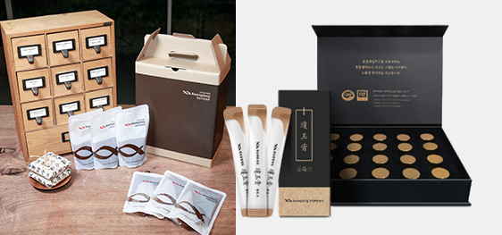
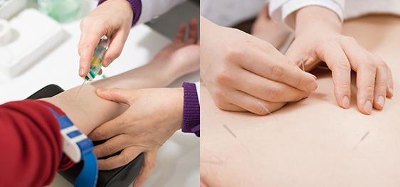

女性の生涯健康のための
更年期障害管理システム

01
肌と体の全般的な診断
廣東病院の韓方薬は更年期で現れる胸苦しさ、胸騒ぎ、紅潮、手足の冷え症などの症状を速やかに鎮静させます。
更年期障害が解決する為に処方する韓方薬は廣東製薬㈱中央研究所と協業して8ステップの韓方薬材管理システムを通じて薬材の安定性及び有効性を 常にチェックしています。
廣東病院の韓方薬材の品質管理に対する試験成績書で韓方薬材品質の確認ができます。

02
韓方·西洋医学が調和した更年期障害治療
治療する前に基本血液検査、ホルモン検査、骨塩定量検査、 ビタミンD検査、赤外線体熱検査、脈や腹の診断など韓方·西洋医学が調和した診断検査を行います。
その結果を参考して更年期韓方薬を処方します。
廣東更年期薬鍼：体の免疫力改善や体の治癒能力を高めて更年期症状を改善させますし、アンチエイジング効果がありお肌の老化を抑制して皮膚細胞を再生させます。